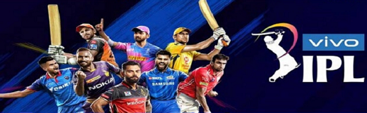

IPL – Week 1 – Young stars who have caught the attention
September 29, 2020, 7:29 AM IST
Author: Rajit Divetia

The Indian Premier League (IPL) 2020 is up and running & has given people an avenue to divert their attention from the gloom of pandemic that has descended this year. Though spectators are not allowed on the ground in this year’s edition, according to media reports, as per estimates of BARC (Broadcast Audience Research Council) 20 crore people watched the tournament opener between the Mumbai Indians and Chennai Super Kings.
One week and 7 matches down here are some of the young guns who have caught my attention and I am sure there will be many more as the tournament progresses.
Ravi Bishnoi ( KXIP): Ravi Bishnoi was one of the stars of India’s U-19 World Cup campaign in South Africa, earlier this year. What has struck the most about him is not only his control over the variations that he possess but also the temperament with which he bowls. In the game against RCB, he was called to bowl inside the powerplay and was taken to cleaners by AB de Villiers but how he came back to pick up 3 wickets was commendable. In two matches played so far, Bishnoi has picked up 4 wickets at an economy rate of less than 7 runs per over. With a mentor like Anil Kumble in the dugout, Bishnoi looks set for a bumper IPL.
Rahul Chahar ( MI):Though he has not set the stands on fire, Rahul Chahar has shown a big heart in the games he has played. Mumbai Indians is one team, which is thin on spinning resources and the early form shown by Chahar would be comforting for the franchisee. With 3 wickets at an economy of under 8 per over, Rahul Chahar surely promises more especially when one considers that the pitches with wear out at the tournament progress.
Sanju Samson (RR): At 25, Sanju has already played 150 T20 matches but when it comes to playing for India he hasn’t got enough opportunities. The way he decimated the CSK bowling attack at Sharjah was pleasing even to the most ardent purist of the game. If he continues the kind of form shown in that one game, not only will RR do well this season, but it will be difficult for the national selectors to ignore him.
Sam Curran (CSK):Unfit Dwayne Bravo paved the way for the inclusion of Sam Curran in the CSK playing XI and with his performances so far, it will be difficult to leave him out once Bravo is fit and ready to play. Curran has picked up 5 wickets (joint highest so far with Rabada) at an economy of under 8 an over. He has also shown that he can hit the ball hard scoring runs at a healthy strike rate of 257, making a case for himself to be batting in the top 5 of that fragile CSK batting line up.
Devdutt Padikkal (RCB):A stylish and easy on the eye fifty on IPL debut has made people sit up and take notice of this young opener from Karnataka. All those who follow India’s domestic cricket knew that Padikkal had talent having scored tons of runs in all forms of the game for Karnataka in the domestic season last year but the question was whether he could do so against international quality bowlers in IPL and he answered that in style. Early signs are that he will get a long rope at the top of the order with RCB this season.
Football Returns Half-Empty, or Half Full?
May 15, 2020, 1:21 PM IST
Author : Ayush Goswami
This Saturday may well decide the way sports will be played and watched in a world wracked with the coronavirus pandemic and still trying to deal with it. All eyes will be on Signal Iduna Park in Dortmund – except there will be only a fraction of them watching from the stands. And almost all will be following a football game on their screens inside the safety of their homes.
On May 16, at 7 pm IST, the Bundesliga season picks up where it left off when Borussia Mönchengladbach last beat Köln 2-1 way back on March 11. This Saturday, the two ‘arch rivals’ from Germany’s Ruhr region Borussia Dortmund, last year’s runners-up, and Schalke will be doing the honours in 2020’s first ‘Revierderby’.
Another standout fixture this weekend sees M’gladbach travel to Frankfurt on Saturday, the game starting 10 pm IST. Dortmund trails league leaders Bayern Munich by 4 points, while at No. 4. M’Gladbach, with 49 points, hopes to close the gap with No. 3 Leipzig.
But more than the games themselves, it will be the fact that football will resume in the shadow of the coronavirus pandemic that will be firmly in focus. Dortmund mayor Ullrich Sierau has already appealed to fans to not gather outside Signal Iduna, and the stadium will be bereft of any spectators. Instead, in a novel innovation, fans can purchase, for 19 euros, a life-size ‘cardboard you’, a replica of themselves to cheer their club on – and not make their players feel too lonely.
The influence of home, and even away crowds, in football can’t be understated. Games have been played behind closed doors before – the PSG vs Dortmund pre-quarterfinal Champions League game on March 11 being one of them, played as it was behind a ‘closed stadium’ and empty stands. It will be difficult for both spectators and players to take in football being played before empty stands, not unlike Pink Floyd’s 1972 ‘Live at Pompeii’ that was staged and recorded as a concert documentary to be watched on screen than actually live like usual music gigs. To be sure, football is no arty extended concert video. And as Dortmund striker Erling Braut Håland’s solitary sentence after the game against PSG that the home side won 2-0 summed up, ‘I need my fans.’
Crowds have always played a big part in teams’ fighting spirit, performance and resurgence. There is no doubt that the ‘mystical concept’ of ‘home advantage’ exists, and that crowds hugely influence the performance of players and, thus, the outcome of games.
Football matches have been played behind closed doors in the past due to a variety of reasons, ranging from breaching of rules to conditions of the surroundings. The likes of Juventus as well as Barcelona have played in empty stadiums before. Now, the completion of leagues behind closed stadia all over Europe seem imminent.
This begs the question: Is the ‘soul’ of football being lost? Teams all over Europe are already hesitant to celebrate immediately after scoring, courtesy VAR (video assistant referee). One never knows when a goal, providence already thanked for, will be disallowed. Add to this, no crowd to celebrate in front of, and we do have a basic human behavioural problem.
While this might not be a problem for the likes of some club sides used to ‘questionable’ atmospheres in their stadium, it will disproportionately affect lesser teams — clubs battling against relegation or fighting for promotion in the lower leagues. While matches will always get millions of viewers online and on television, watching matches even on the TV or computer screen taking place minus the usual roar and buzz of crowds from the stands will take getting used to. To rephrase the by-now weary cliché used outside the Beautiful Game: We probably will have to get used to the new football normal.